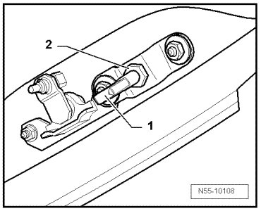

Striker Pin, Adjusting
Bolted Windows
Striker Pin, Adjusting
• The rear lid hinged window must be adjusted.
- Remove cover for wiper motor.

- By loosening the nut - 2 -, the striker pin - 1 - can be adjusted to the hinged tailgate window lock.
The hinged window is correctly adjusted when the striker pin engages the hinged window lock without resistance.